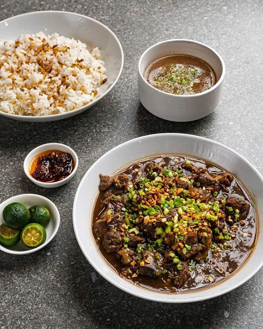

Pork belly and pig ears are first cooked in a pot of boiling water until they are soft. They are then placed on a grill for a few minutes until they brown and acquire a satisfying texture. After grilling, I cut the meat into small pieces.
Ginger is sautéed to begin the sisig cooking process. include chicken liver Cook it completely. For this sisig recipe, ginger is an optional ingredient. To lessen the gaminess of chicken liver, I added it. You are welcome to use it whatever you like.
Add the meat mince. These are the ears and belly of the pig. Be sure to thoroughly combine all the components. This will harmonize the dish's flavor. After that, add the spices and condiments.
You might choose to serve the food on a metal plate. This can be put on a standard plate as well. This variation has an egg on top. This is not required.
For Sinangag (Garlic Fried Rice)
Heat a large wok or non-stick pan over medium high heat. Once hot, add in the oil. Add in the salt and mix into the oil.
dd in the garlic and cook over medium heat until golden brown.
Add in the leftover cooked and cooled rice, and break apart any large chunks, if there are any. Mix the rice into the oil and garlic and leave to cook for 4-5 minutes over medium high heat. Feel free to season with more salt, to taste, if you would like.
Turn off the heat and enjoy!
Nutritional Value
Calories: 1248 kcal
Carbohydrates: 48 g
Protein: 37 g
Fat: 100 g
Saturated Fat: 34 g
Cholesterol: 265 mg
Sodium: 1052 mg
Potassium: 772 mg
Fiber: 4 g
Sugar: 2 g
Vitamin A: 3806 IU
Vitamin C: 19.6 mg
Calcium: 80 mg
Iron: 4.9 mg
Lomi
Ingredients
500 grams miki noodles
5 cloves garlic minced
1 onion chopped
100 grams fried kikiam sliced
150 grams pork belly sliced into thin strips
3 Tbsp. cassava flour diluted in 3 Tbsp. water
100 grams pork liver sliced
1 ½ Tbsp. fish sauce patis
1 Tbsp. soy sauce
6 to 8 cups pork broth or water
1 pc pork cube optional if using pork broth
½ tsp. ground black pepper
1 piece raw egg beaten
2 Tbsp. spring onion chopped
2 Tbsp. cooking oil
1 cup chicharon crushed (for garnishing)
or ½ cup chopped fried pork for garnishing
Preparation
In a wok, heat some cooking oil and saute garlic and onion until the onions are soft. Add the pork and stir fry until brown and crispy. Add the pork liver and saute again for a minute. Season pepper and stir. Then pour fish sauce and soy sauce and stir until it mixed well with the meat.
Pour the pork broth and bring to a boil. If you are using water instead of pork broth, add the pork cubes. Then simmer until the pork is tender for about 20 minutes.
Add the miki noodles and stir cook for about 6 minutes. Adjust the seasoning with salt and pepper if necessary. After cooking the noodles, pour the cassava starch slurry and stir cook in low heat until the sauce thickens.
Add the beaten egg in the soup and stir until the eggs are evenly distributed. Turn off heat and serve in a bowl and garnish with crushed chicharon, kikiam and spring onions. Serve with the mixture of soy sauce, kalamansi and red chili peppers.
Nutritional Value
Total Fat: 8 g
Saturated Fat: 3.5 g
Sodium 1270: mg
Total Carbohydrates: 41 g
Dietary Fiber: 2 g
Sugars: 5 g
Protein: 7 g
Chicken Adobo
Ingredients
2 lbs chicken cut into serving pieces
3 pieces dried bay leaves
8 tablespoons soy sauce
4 tablespoons white vinegar
5 cloves garlic crushed
1 ½ cups water
3 tablespoons cooking oil
1 teaspoon sugar
¼ teaspoon salt optional
1 teaspoon whole peppercorn
Preparation
In a large bowl, mix the chicken, soy sauce, and garlic. Mix thoroughly. Chicken should be marinated for at least an hour. The better the duration, please take note.
Heat a cooking pot. Distribute cooking oil.
The chicken should be pan-fried for two minutes on each side once the oil is hot enough.
Add the remaining marinade, along with the garlic. Add water up to a boil.
Add whole peppercorns and dried bay leaves. Boil the chicken for 30 minutes, or until it is cooked.
Include vinegar. Cook for 10 minutes while stirring.
Salt and sugar should be added. Stir and turn off the heat. Immediately serve. Enjoy and share!
Nutritional Value
Calories: 607 kcal
Carbohydrates: 4 g
Protein: 44 g
Fat: 44 g
Saturated Fat: 10 g
Cholesterol: 170 mg
Sodium: 1317 mg
Potassium: 496 mg
Sugar: 1 g
Vitamin A: 365 IU
Vitamin C: 5.1 mg
Calcium: 50 mg
Iron: 3 mg
Beef Pares

Ingredients
2 ½ lbs. beef cubed
1 piece Knorr Beef Cube
2 pieces star anise
¼ cup brown sugar
½ cup scallions chopped
2 thumbs ginger minced
6 tablespoons soy sauce
1 piece onion chopped
5 cloves garlic crushed
2 ½ cups water
3 tablespoons cooking oil
Salt and ground black pepper to taste
Preparation
In a pressure cooker or cooking pot, heat the oil. Stir-fry ginger, garlic, and onion.
Put the beef when the onion has softened. Cook to a pale brown color.
Add water and soy sauce. Stir.
Add star anise and Knorr Beef Cube. Cook under pressure for 15 minutes with the lid on the pressure cooker.
Season with salt and freshly ground black pepper before adding brown sugar. Simmer for a further 8 to 10 minutes, or until the sauce slightly reduces.
Serve sinangag and beef stock alongside, and sprinkle chopped scallions over top. Enjoy and share.
Nutritional Value
Calories: 3622 kcal
Carbohydrates: 80 g
Protein: 210 g
Fat: 269 g
Saturated Fat: 90 g
Cholesterol: 805 mg
Sodium: 7814 mg
Potassium: 3722 mg
Fiber: 4 g
Sugar: 61 g
Vitamin A: 500 IU
Vitamin C: 22.2 mg
Calcium: 392 mg
Iron: 26.9 mg
Dinuguan at Puto
Ingredients
For Dinuguan
2 lbs. pork shoulder cubed
1 ¼ cups pork blood
1 piece Knorr Pork Cube
4 pieces long peppers
2 pieces onion chopped
6 cloves garlic minced
2 cups water
¾ cup white vinegar
3 pieces dried bay leaves
3 tablespoons cooking oil
1 tablespoon granulated white sugar
Salt and ground black pepper to taste
For Puto
1 egg white
½ c (118.3 g) water
½ c coconut milk
110 g (1 c) rice flour
6.5 g (2 tsp) baking powder
112 g (½ c) white sugar
Eden cheese cut into slices (optional)
Preparation
For Dinuguan
In a cooking saucepan, heat oil.
30 seconds of sauteing onion. Include garlic Up till the onion softens, continue to cook.
Add pork and saute Coosautek for three to five minutes.
Add water. Let it boil. Add vinegar and bay leaves. Re-boil the liquid.
Add the Knorr Pork Cube. Stir. For one hour, simmer covered. Add water as necessary.
Long green peppers should be added, along with some pork blood. Stir. Stirring every three minutes, the food should continue to cook for a further 15 minutes at low to medium heat.
Season sugar with salt and freshly ground black pepper.
Put in a serving bowl. Enjoy.
For Puto
On the stove, preheat your steamer over medium heat.
Whisk the egg whites, water, and coconut milk together in a sizable mixing basin until thoroughly combined.
Over the wet ingredients, sift the baking powder and rice flour. To combine all the ingredients, whisk them together. Mix the sugar in with the batter after adding it.
Fill the mini muffin molds with the puto mixture about 3/4 of the way. Insert the molds into the steamer, then secure the lid.
After 8 minutes of steaming, remove the cover and check if the puto is firm and fluffy. If you want to add cheese, slice it thinly into 1/2-inch slices and spread them over the puto.
After 8 minutes of steaming, remove the cover and check if the puto is firm and fluffy. If you want to add cheese, slice it thinly into 1/2-inch slices and spread them over the puto. Let it around 30 seconds to melt under the lid's cover. When the cheese has just begun to melt, remove.
Take the puto out of the steamer, and after cooling in the molds for 30 seconds, take them out. With your sizzling hot dinuguan, serve right away!